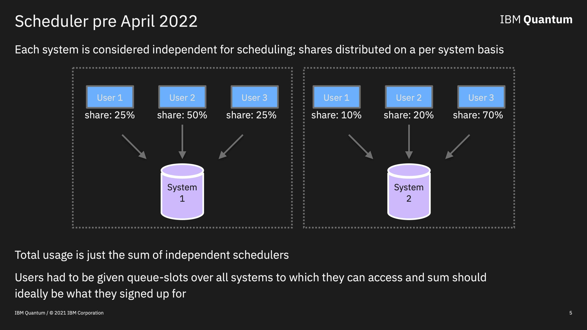
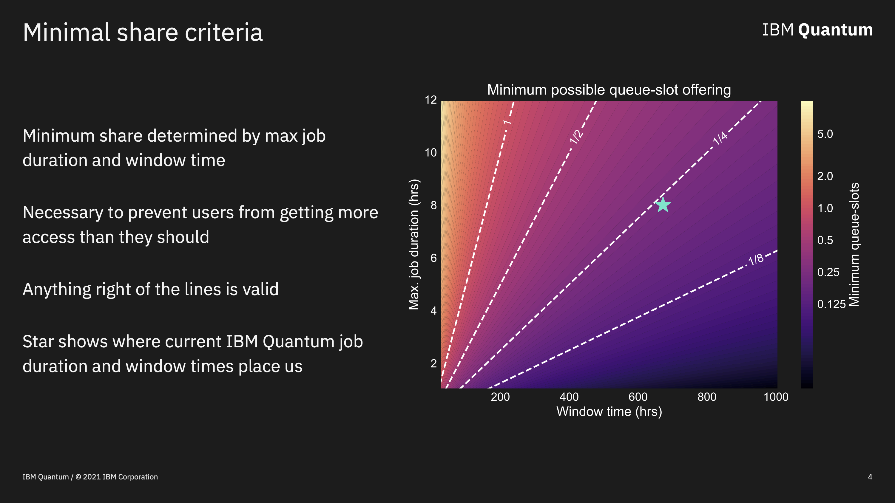
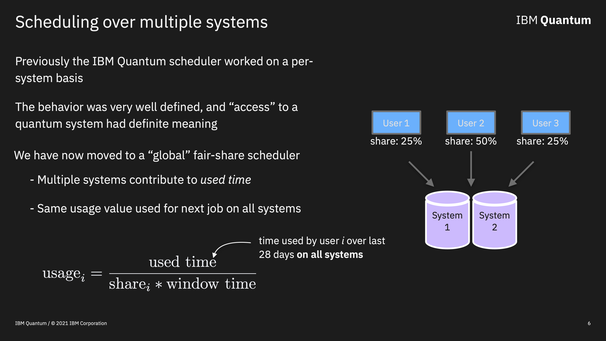

Understanding fair-share scheduling#
Here we will introduce the reader to Fair-share Scheduling, the method by which most IBM Quantum systems are accessed. We will go over the basics of Fair-share and understand its behavior via simulation.
Frontmatter#
Here we import the tools we will need to make a threaded Fair-share scheduling simulation.
import time
import datetime
import threading
import numpy as np
# For plotting
import matplotlib.pyplot as plt
plt.style.use('ibmq-dark')
%config InlineBackend.figure_format='retina'
Introduction to Fair-share#
Understanding how jobs are processed by IBM Quantum computers is one of the harder things for users to grasp. These difficulties are due to the fact that the manner in which jobs are processed by the quantum processors (QPUs) is dynamic; there is no notion of a fixed order / queue. This makes informing users as to when their jobs will execute challenging. Add to this the fact that many types of jobs, e.g. iterative algorithms, do not have an a priori known execution time, and things get even harder to estimate.
However, the fundamental building blocks of a fair-share scheduler are fairly easy to understand. In fact, fair-share scheduling has been around for sometime, is a standard building-block of classical operating systems, and even has a Wiki page: Fair-share_scheduling. Moreover, even though this system is complex in practice, we can actually simulate the dynamics, and understand the behavior in certain theoretical limits.
Here we introduce the reader to the fair-share scheduler used by IBM Quantum and the assumptions and limitations that come into play. In particular, we will simulate the behavior of this model in several situations to gain understanding of how it works in ideal settings.
Scheduling assumptions#
The fair-share algorithm is predicated on the validity of several assumptions. These are laid out in the following slide:

So, in short, the hardware is assumed to be used all the time, we cannot make the duration of the jobs longer than some threshold value, and (of course) we should give access to the hardware in proportion to what “share” is purchased or allotted.
Fair-share basics#
With the assumptions and operating conditions in hand, we can now get to the basics behind fair-share. First, we need three ingredients: The fraction of system access given to each user, the floating time span over which we aim to balance the usage, and the maximum duration of a job.
To begin we focus on the simple situation where several users with different shares send jobs to a single QPU. First, user is given some fraction of system as their access amount (if you have noticed I try to avoid saying anything about amounts of time a user gets and instead say “access”. This is intentional). Next, we have to compute the amount of “usage” that each user has accumulated going back in time by an amount equal to the window time and adding up the time for all jobs in this duration. For example, with a time window of 4 weeks/ 28 days (\(168 * 4=672\) hours), we go back and and sum over all the prior jobs on the QPU in the last \(672\) hours from the user of interest. This is the “used time” for that user. The usage for user \(i\) is then given by
Every time the QPU requests another job, it looks at the usage over all the users with jobs waiting, and selects the next job from the user with the least usage. What this means is that the order in which jobs are processed is dynamic, and depends on an users usage relative to other users waiting for the system. For example, you may have a job that at one moment is next in line to be executed when another user with lower usage jumps on and you get bumped back. This is the fair-share scheduler attempting to balance the usage. To see this in action we need to simulate the scheduling. That will be our next task.
Simulating fair-share scheduling#
Here we will create the code needed to simulate fair-share scheduling. There are a few limitations that we must keep in mind. 1) It is difficult to simulate fair-share starting from anything but a simple initial state. 2) We will use our assumption that all users are continuously submitting jobs to all QPUs. 3) The duration of jobs will be chosen randomly from a uniform distribution between [0, max_job_time).
In order to simulate fair-share we will need the notion of an “User”; a class object representing an user. A collection of users, here called “Users” that tells the system the number of users that are available and their properties related to computing usage. This is also important for processing jobs from multiple QPUs in parallel, which is what happens in the real world.
The code below also uses “queue slots” in place of “shares” for the unit of access given to users. This is a very IBM Quantum specific unit of access, and one queue-slot is equal to 5% access to a single QPU. So each machine has 20 queue-slots of access; if you have a dedicated machine then you have 20 queue-slots of access.
class User():
def __init__(self, queue_slots):
""" A User class for keeping track of usage from a single organization.
"""
self.queue_slots = queue_slots
self.index = 0
self.used_time = 0.0
def __repr__(self):
return "User<index: {}, queue_slots: {}, used_time: {}>".format(self.index,
self.queue_slots,
np.round(self.used_time, 3))
class Users():
def __init__(self):
"""A class that tracks shares, queue-slots, and usage across all organizations
"""
self.user_list = []
self.total_queue_slots = 0
self.index = 0
def append(self, user):
"""Add a new user and give it an id
Parameters:
user (User): A user instance to add
"""
user.index = self.index
self.index += 1
self.user_list.append(user)
self.total_queue_slots += user.queue_slots
def __getitem__(self, idx):
return self.user_list[idx]
def __repr__(self):
return self.user_list.__repr__()
In addition to users, we also need a Job object that tells us which user submitted the job, the job durations, and the usage of the user at the time the job was chosen:
class Job():
def __init__(self, user_id, duration, usage):
"""A single Job
"""
self.user = user_id # which user is the job from
self.duration = duration # The duration of the job
self.timestamp = None # When the job started
self.usage = usage # The usage of the user when the job started
def __repr__(self):
return "Job<User: {}, duration: {}, usage: {}>".format(self.user,
np.round(self.duration,3),
self.usage)
We now turn to representing the QPUs themselves. The QPU class is more complicated as it contains the threaded processing code as well as the Users object so that it can update the values contained in that object from the different threads. The _start_processing method does the actual simulated job execution.
class QPU():
def __init__(self, users, window_time=168*4, max_job_time=4):
"""A class for representing a QPU that processes jobs in a
separate thread.
Parameters:
users (Users): The class representing all users.
window_time (float): The duration of the floating window, default=672.
max_job_time (float): The maximum job duration. Should be << then window_time, default=8
"""
self.elapsed_time = 0 # The elapsed time accumulated on this QPU
self.job_history = [] # A history of all the jobs on this QPU
self.users = users # Holds the user list for processing
self.window_time = window_time # The window time
self.max_job_time = max_job_time # The maximum job duration
self.rng = np.random.default_rng() # Gives the QPU its own RNG
self.thread = None # The thread doing the work
self.start_time = None # The start time of the job processing
def __repr__(self):
return "QPU<elapsed_time: {}, total_jobs: {}>".format(self.elapsed_time, len(self.job_history))
def _start_processing(self):
"""The actual routine that does the simulated job execution
"""
while self.elapsed_time < self.window_time:
# determine which user goes next
_next, _usage = next_user(self)
# Create a job for this user and randomly generate a job duration
job = Job(user_id=_next,
duration=self.max_job_time*self.rng.random(),
usage=_usage)
job.timestamp = datetime.datetime.now()
# Pause for the duration of the job (with a 1e-4 constant to make it fast)
time.sleep(job.duration*1e-4)
# Add the duration of the job to the identified user
self.users[_next].used_time += job.duration
# Add the duration to the QPU total time
self.elapsed_time += job.duration
# Add the job to the job history for the QPU
self.job_history.append(job)
def run(self):
"""Start processing jobs in a separate thread
"""
self.thread = threading.Thread(target=self._start_processing)
self.thread.start()
def join(self):
"""Join the thread when done
"""
self.thread.join()
Ok we are almost done. We just need to make a function that determines our usage as given by the above equation
def usage(user, processor):
"""Computes the usage of a User
Parameters:
user (User): The user
processor (QPU): The QPU
Returns:
float: The usage for the User
"""
return user.used_time / (user.queue_slots * processor.window_time)
and make another function that computes the usage for all users, and selects the one with the lowest usage to go next
def next_user(processor):
"""Decide which user goes next based on their usage
Parameters:
processor (QPU): The QPU determining which user is next
Returns:
int: The ID of the selected user
float: The usage of the selected user
"""
users = processor.users
usage_numbers = np.array([usage(ptnr, processor) for ptnr in users.user_list])
idx = np.where(usage_numbers == np.min(usage_numbers))[0][0]
return idx, usage_numbers[idx]
Fair-share simulation: One system, multiple users#
Let us simulate scheduling for a single system with three users with total queue-slot allocations of 20; we have allocated the entire system in terms of queue-slots.
# Define the number of QPUs and window time (the max job duration is implicitly set to 8)
num_qpus = 1
window_time = 168*4
# Add 3 users with sum of queue-slots equal to 20
users = Users()
users.append(User(5))
users.append(User(5))
users.append(User(10))
# Generate the QPUs
processors = [QPU(users) for _ in range(num_qpus)]
# Start the threads to run the simulated job execution
[pro.run() for pro in processors]
# Join the threads when done
[pro.join() for pro in processors]; # semi-colon to supress null output
You have now performed a fair-share scheduling simulation! To see the results let us print out the accumulated on-chip time for each user:
sim_time = np.round(np.array([user.used_time for user in users.user_list]), 2)
print('simulated_time:', sim_time)
simulated_time: [169.3 167.69 335.93]
We see that the first two users use roughly the same amount of time (up to fluctuations inherent in our simulation method), where as the third user uses double the time for the others. This is exactly what one should expect given that users 1 & 2 are given the same number of queue-slots, and user 3 is given double that.
We now turn to a very important question: How much time do we expect each user to get given the number of queue-slots? So far we have gone to great lengths NOT to discuss the amount of time that an user should get. Instead we have focused on “access”. The reason is because unless all users submit jobs continuously to all QPUs,there is no rigorous notion of expected amounts of time in the fair-share model. There are too many unknowns when operating outside of this assumption to be able to draw any conclusions at all. This is why this assumption is extremely important, and why we have stuck with “access” until now.
Because our simulations are working in this ideal regime we can convert the access given by queue-slots into time by converting them to a fraction and multiplying by the window time.
expected_time = np.array([(user.queue_slots*0.05) * window_time for user in users.user_list])
print('expected_time:', expected_time)
expected_time: [168. 168. 336.]
We see that the simulated times correspond nicely with these theoretical expectations. The only difference is up to small fluctuations inherent in the way we create jobs.
We can also look at other values of interest. For example, how many jobs were executed from each user?
total_jobs = [0]*3
for job in processors[0].job_history:
total_jobs[job.user] += 1
plt.bar(['User 1', 'User 2', 'User 3'], total_jobs)
plt.title('Jobs per user');
Or, for example, we can look at the execution pattern of jobs to identify the order in which user jobs were executed:
which_user = []
for job in processors[0].job_history[:21]:
which_user.append(job.user)
plt.plot(which_user, 'o--')
plt.ylabel('User number')
plt.xlabel('Job index')
plt.title('History of first 20 jobs executed');
Now it is important to remember that everything is relative, and depends in the usage of users verses others. So lets repeat the above example, but only give out half of the total queue-slots for a machine; 10 verses the full 20.
# Add 3 users with sum of queue-slots equal to 10
users = Users()
users.append(User(2.5))
users.append(User(2.5))
users.append(User(5))
# Generate the QPUs
processors = [QPU(users) for _ in range(num_qpus)]
# Start the threads to run the simulated job execution
[pro.run() for pro in processors]
# Join the threads when done
[pro.join() for pro in processors]; # semi-colon to supress null output
sim_time = np.round(np.array([user.used_time for user in users.user_list]), 2)
print('simulated_time:', sim_time)
simulated_time: [167.73 168.67 337.73]
Has we would have guessed, the total amount of time per user remains unchanged. This is because in a relative expression we are free to multiple both sides by a number and leave the expression valid. In this case it is dividing the shares (queue-slots) by 2, which is equal to multiplying the usage by a factor of 2. Either way it does not change anything.
This essentially the way that jobs were scheduled on IBM Quantum systems up to April 2022. Each system had its own set of queue-slots, and users were given a fraction of these slots per system to which they had access. The usage, and thus job processing, was computed per machine. The above simulations would have been valid per machine, and the total usage, real or theoretical, could be computed by summing over all machines.
Minimum access amount#
Although we are in principle free to set queue-slot (share) values to whatever we want, in practice this is not the case. Because jobs are not infinitesimally small in duration, giving too small an access amount can lead to users with small fractions getting more than they should under the fair-share assumptions. Preventing this from happening requires balancing the window time with the maximum allowed job duration. The slide below shows that in the case of IBM Quantum a quarter of a queue-slot, 1.25%, is the smallest amount of access that can be given under the current operating parameters.
Fair-share simulation: Multiple systems, multiple users#
In mid-April 2022, IBM Quantum changed from fair-share scheduling per system to a global version where usage is computed by summing over jobs on all systems during the floating time window.
It is a simple extension of our code above to simulate this. Here we just add another QPU and rerun with the same number of queue-slots allocated as before:
# Number of QPUs now 2
num_qpus = 2
# Add 3 users with sum of queue-slots equal to 20
users = Users()
users.append(User(5))
users.append(User(5))
users.append(User(10))
# Generate the QPUs
processors = [QPU(users) for _ in range(num_qpus)]
# Start the threads to run the simulated job execution
[pro.run() for pro in processors]
# Join the threads when done
[pro.join() for pro in processors]; # semi-colon to supress null output
Simulating as we did before we can compute the total amount of time used:
sim_time = np.round(np.array([user.used_time for user in users.user_list]), 2)
print('simulated_time:', sim_time)
simulated_time: [336.84 338.97 672.95]
and find that the total time used is twice the amount that the queue-slots say we should get. This is a general feature of this type of scheduling; When doing fair-share scheduling over N systems using a unique usage value, you get N times the total time expected from the queue-slot allocation. So if you have arranged for 5% of access over a single-system, in the global model you would get \(N * 5\%\) total access. Now, in practice this is not exactly how IBM Quantum implements fair-share, so this factor of N enhancement in total time is not really to be expected in most cases. Also our assumption of continuous demand by all users over all systems is very ideal, and never observed in practice.